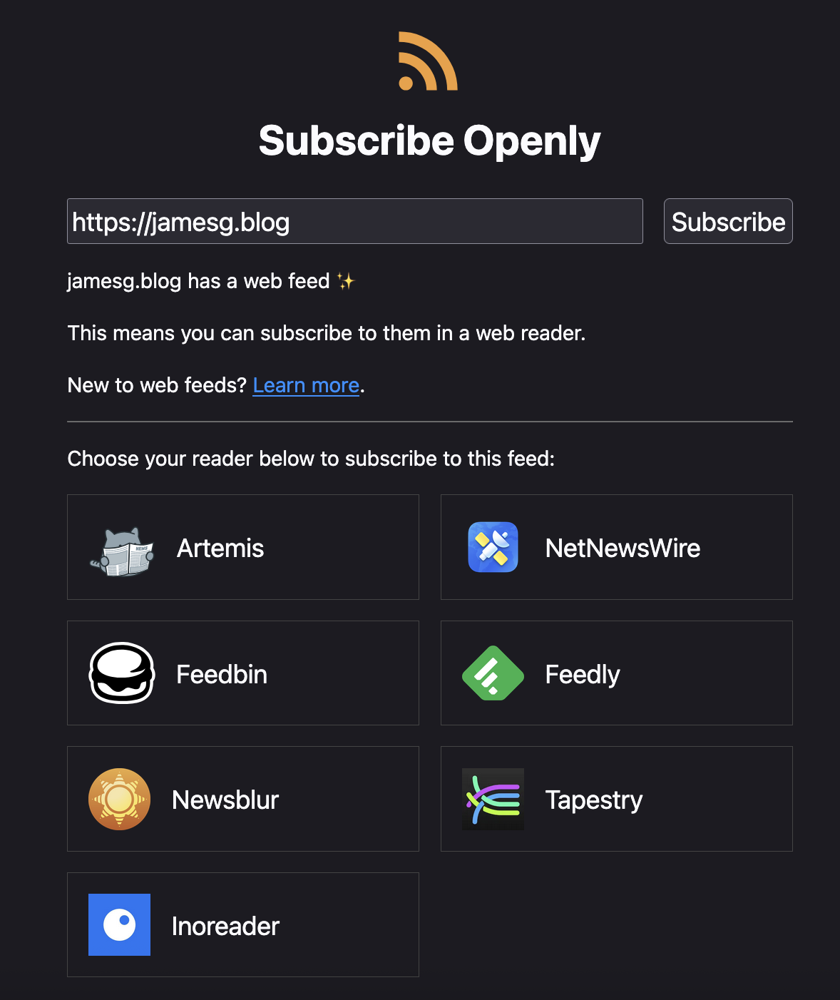

Subscribe Openly
Create a link to your RSS or Atom feed that lets users subscribe with their preferred reader.
Your Subscribe Openly Link
Copy the link below to use on your website:
https://subscribeopenly.net/subscribe/?url=
Open this link to see how it works.
Demo
Here is an example of a Subscribe Openly link for a web feed:
